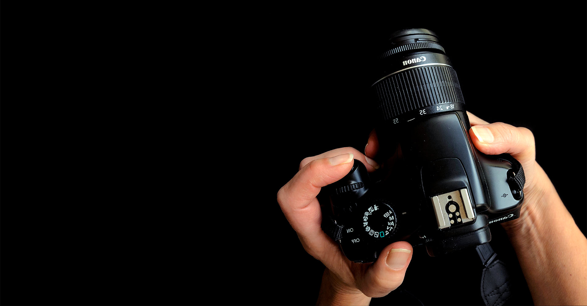
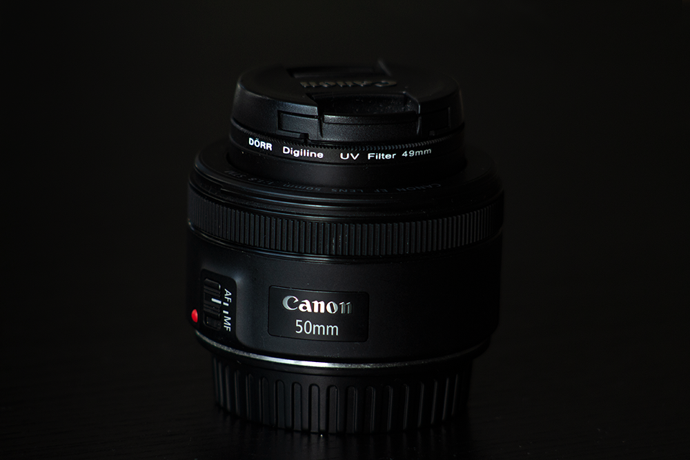

Flere og flere bruger deres mobil til billedbehandling, både professionelle og dem som redigere deres billeder på farten.
1. Kom væk fra auto og lær manuel
Det første og vigtigste tip er at komme væk fra auto-mode. Det kan være overvældene at komme i gang, men manuel indstilling er det første skridt til rejsen som en professionel fotograf. Og et fundament for stærkere billeder.
Manuel vil give dig en større frihed og mulighed for at få lige præcis det frem i dine billeder som du ønsker. Måske ønsker du en sløret baggrund?
Kom i gang
Du spørger nok, men hvordan bruger jeg så manuel indstilling på mit kamera? På de fleste kameraer side der et hjul øverst, hvor det er muligt at skifte fra auto til manuelt.

Hvad er manuel?
Manuel betyder at du selv fortæller kameraet, hvordan et billede skal eksponeres. Det foregår ved at styre eksponeringstrekanten, det vil sige blænde, ISO og lukkertid.
2. Skyd billeder i RAW
En raw-fil er kameraet råbillede, som indeholder alle de informationer kameraet kan opfange. Det er en fil som fylder meget, men giver derimod også flere muligheder i redigeringen.
I modsætning til når du skyder i jpeg, hvor kameraet derimod komprimere filen for dig, hvilket gør den ikke fylder så meget.
3. Billedbehandling betyder mere end du tror
Rigtig meget af magien ved et foto sker ved efterbehandlingen. Blot nogle få ændringer i farver og eksponering kan gøre en kæmpe forskel for dit billede.
Det er også igennem billedbehandlingen, at du virkelig kan udtrykke din stil og få et vedvarende udtryk.
4. Tag kameraet med dig
Du har garanteret fået det at vide utallige gange, men vi kan ikke komme udenom, at det der i sidste ende gør dig til en god fotograf, er øvelse.
Så tag dit kamera med under armen til den næste familietur, oplevelse eller gåtur. Det handler om at prøve sig ad med en masse forskellige ting og lige pludselig, finder du også din niche.
5. Invester i et objektiv
Du har måske lige købt dit nye kamera og nu skal du også investere i et nyt objektiv? Ikke nødvendigvis. Udstyr er ikke alt, og det er først og fremmest vigtigst at du lærer, hvordan dit kamera virker og skal indstilles.
Men når du så er fortrolig med det du har, så er sandheden bare den, at kit-objektiver har mange begrænsninger. Og du vil pludselig se et større potentiale i dit kamera, ved at udskifte det til et objektiv der passer dine behov.

Derfor er et 50mm din nye bedste ven
50mm objektiver er et ideelt valg til en begynder. Det er nemlig en af de billigste opgraderinger af dit udstyr, som du kan investere i.
De fleste kameramærker laver et 50mm objektiv til omkring 900-1500 kr. Hvilket er utrolig billigt, hvis man sammenligner med andre objektiver.